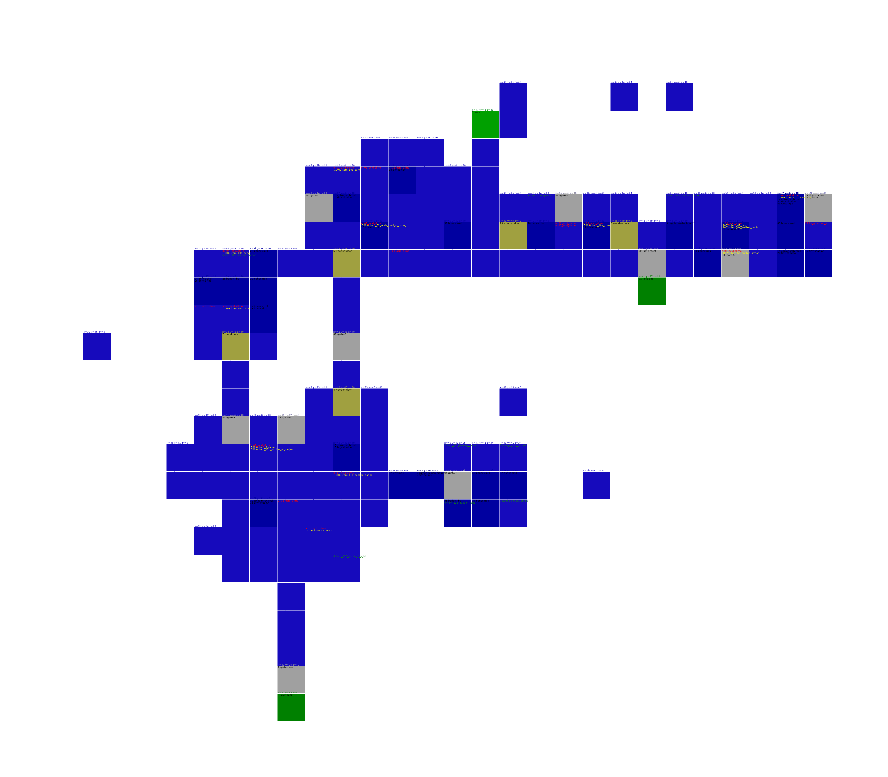
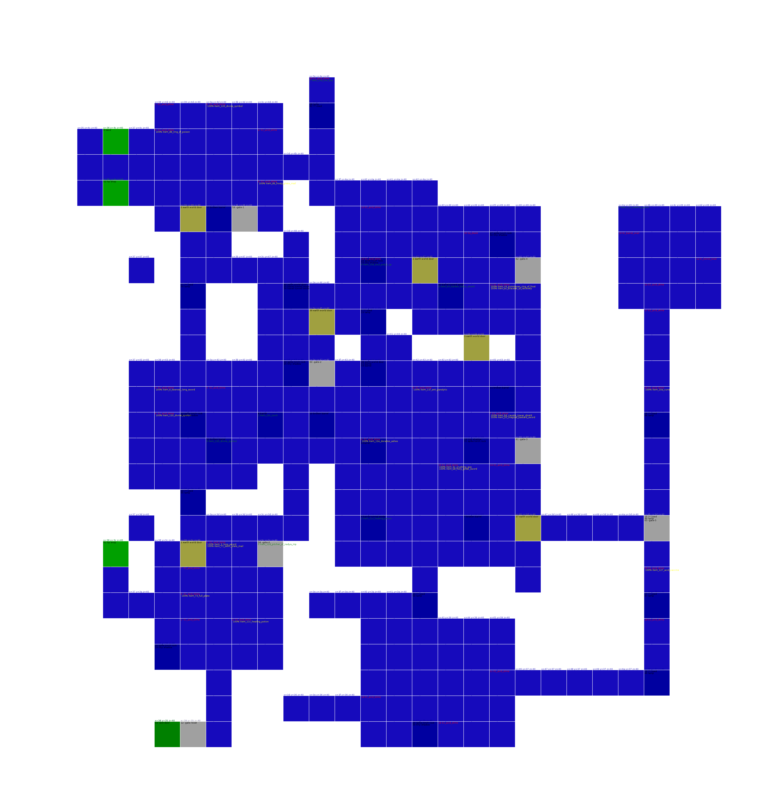
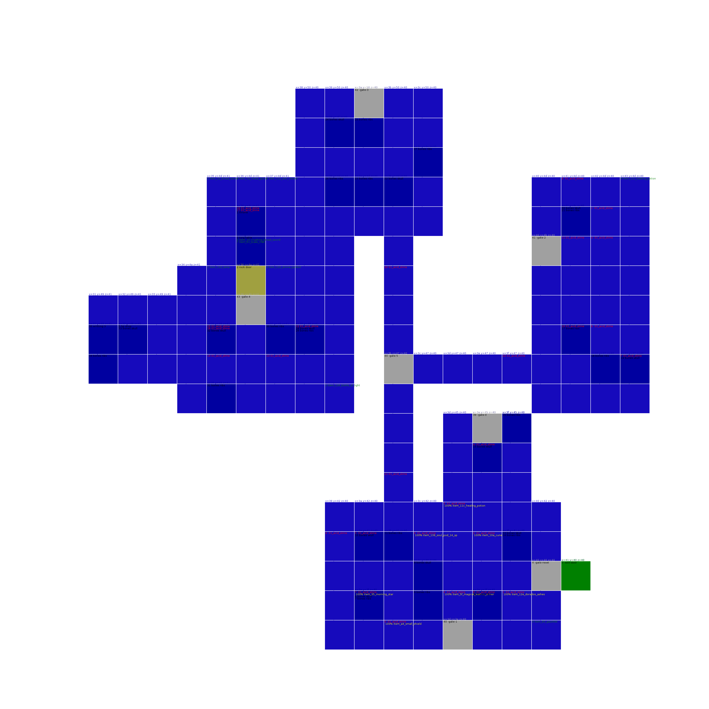
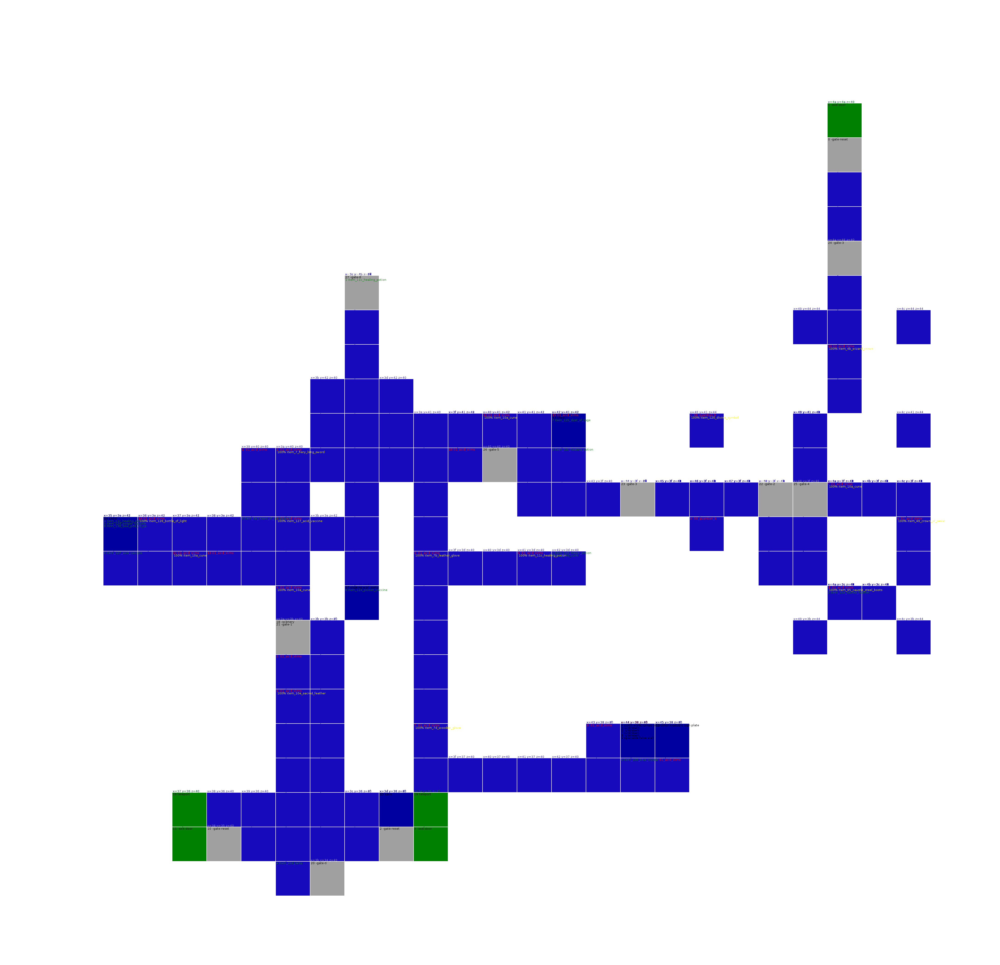
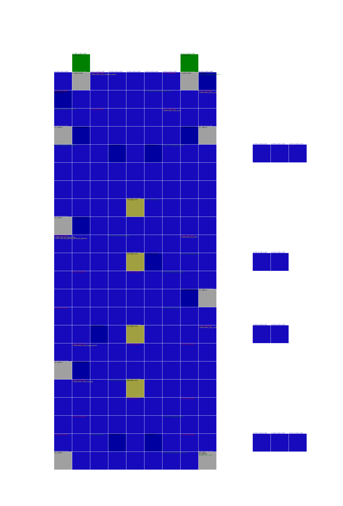
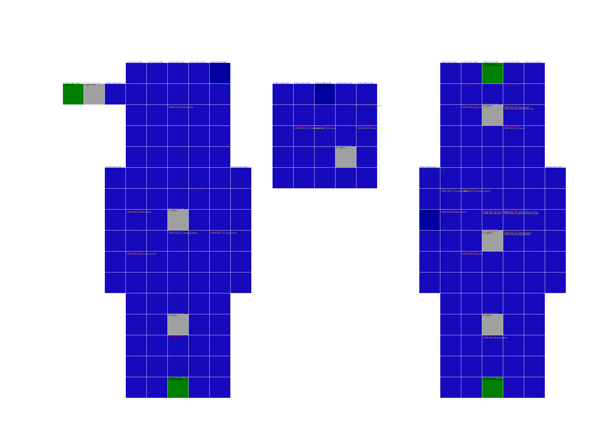
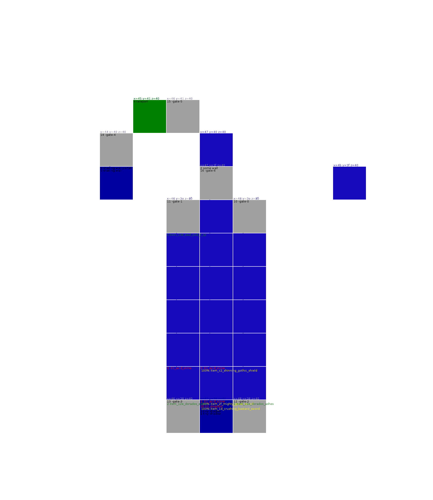

graph TD
shadow_tower_part1a[Shadow Tower Part1 A] -- Tower Top --> shadow_tower_part3a[Shadow Tower Part3 A 3]
shadow_tower_part3a[Shadow Tower Part3 A] -- Top right --> shadow_tower_part1a[Shadow Tower Part1 A]
shadow_tower_part3a[Shadow Tower Part3 A] -- Top left --> human_world_solitary_region[Human World
Solitary Region 6]
shadow_tower_part3a[Shadow Tower Part3 A] -- Bottom --> shadow_tower_part1c[Shadow Tower Part1 C]
shadow_tower_part3a[Shadow Tower Part3 A] -- Jump --> shadow_tower_part3b[Shadow Tower Part3 B 3]
shadow_tower_part1c[Shadow Tower Part1 C] -- Top --> water_world_watery_labyrinth_area[Water World
Watery Labyrinth Area 3]
shadow_tower_part1c[Shadow Tower Part1 C] -- Middle --> shadow_tower_part3a[Shadow Tower Part3 A 3]
shadow_tower_part1c[Shadow Tower Part1 C] -- Edge --> fire_world_phoenix_cave[Fire World
Phoenix Cave 3]
shadow_tower_part3b[Shadow Tower Part3 B] -- Bottom middle --> earth_world_stone_cavern[Earth World
Stone Cavern 7]
shadow_tower_part3b[Shadow Tower Part3 B] -- Top edge --> illusion_world_worship_domain[Illusion World
Worship Domain 3]
shadow_tower_part3b[Shadow Tower Part3 B] -- Bottom end --> monster_world_screeching_area[Monster World
Screeching Area 3]
shadow_tower_part3b[Shadow Tower Part3 B] -- Jump --> shadow_tower_part3c[Shadow Tower Part3 C 3]
shadow_tower_part3c[Shadow Tower Part3 C] -- Fence --> death_world_gate_of_the_dead[Death World
Gate Of The Dead 4]
fire_world_phoenix_cave[Fire World
Phoenix Cave] -- Entrance --> earth_world_hostile_rock_cavern[Earth World
Hostile Rock Cavern 4]
fire_world_phoenix_cave[Fire World
Phoenix Cave] -- Exit --> shadow_tower_part1c[Shadow Tower Part1 C]
water_world_watery_labyrinth_area[Water World
Watery Labyrinth Area] -- Entrance --> water_world_white_rain_area[Water World
White Rain Area 4]
water_world_watery_labyrinth_area[Water World
Watery Labyrinth Area] -- Exit --> shadow_tower_part1c[Shadow Tower Part1 C]
monster_world_screeching_area[Monster World
Screeching Area] -- Entrance --> shadow_tower_part3b[Shadow Tower Part3 B 3]
monster_world_screeching_area[Monster World
Screeching Area] -- Totem --> human_world_forgotten_region[Human World
Forgotten Region 4]
monster_world_screeching_area[Monster World
Screeching Area] -- Necron --> monster_world_false_eye_area[Monster World
False Eye Area 4]
illusion_world_worship_domain[Illusion World
Worship Domain] -- Entrance --> shadow_tower_part3b[Shadow Tower Part3 B 3]
illusion_world_worship_domain[Illusion World
Worship Domain] -- Connection --> fire_world_molten_cavern[Fire World
Molten Cavern 4]
illusion_world_worship_domain[Illusion World
Worship Domain] -- Exit --> fire_world_ashen_cavern[Fire World
Ashen Cavern 4]
illusion_world_worship_domain[Illusion World
Worship Domain] -- To Boss --> fire_world_burning_cavern[Fire World
Burning Cavern 4]
human_world_forgotten_region[Human World
Forgotten Region] -- Exit --> human_world_cursed_region[Human World
Cursed Region 7]
human_world_forgotten_region[Human World
Forgotten Region] -- Jump down --> water_world_sunken_river_area[Water World
Sunken River Area 7]
human_world_forgotten_region[Human World
Forgotten Region] -- Totem --> human_world_hidden_region[Human World
Hidden Region 5]
human_world_forgotten_region[Human World
Forgotten Region] -- Drop in --> monster_world_screeching_area[Monster World
Screeching Area 3]
earth_world_hostile_rock_cavern[Earth World
Hostile Rock Cavern] -- Entrance --> fire_world_phoenix_cave[Fire World
Phoenix Cave 3]
earth_world_hostile_rock_cavern[Earth World
Hostile Rock Cavern] -- Boss room --> death_world_lingering_curse_layer[Death World
Lingering Curse Layer 5]
fire_world_burning_cavern[Fire World
Burning Cavern] -- Entrance --> earth_world_quaking_cavern[Earth World
Quaking Cavern 10]
fire_world_burning_cavern[Fire World
Burning Cavern] -- Platform --> illusion_world_dream_domain[Illusion World
Dream Domain 5]
fire_world_burning_cavern[Fire World
Burning Cavern] -- Room --> illusion_world_worship_domain[Illusion World
Worship Domain 3]
fire_world_molten_cavern[Fire World
Molten Cavern] -- Abraxus --> fire_world_ashen_cavern[Fire World
Ashen Cavern 4]
fire_world_molten_cavern[Fire World
Molten Cavern] -- Platform --> illusion_world_worship_domain[Illusion World
Worship Domain 3]
fire_world_ashen_cavern[Fire World
Ashen Cavern] -- Cerberus --> fire_world_molten_cavern[Fire World
Molten Cavern 4]
fire_world_ashen_cavern[Fire World
Ashen Cavern] -- Start --> illusion_world_worship_domain[Illusion World
Worship Domain 3]
water_world_white_rain_area[Water World
White Rain Area] -- Entrance --> water_world_watery_labyrinth_area[Water World
Watery Labyrinth Area 3]
water_world_white_rain_area[Water World
White Rain Area] -- Totem --> death_world_dark_castle_layer[Death World
Dark Castle Layer 5]
monster_world_false_eye_area[Monster World
False Eye Area] -- Entrance --> shadow_tower_part2b[Shadow Tower Part2 B 7]
monster_world_false_eye_area[Monster World
False Eye Area] -- Totem --> monster_world_screeching_area[Monster World
Screeching Area 3]
death_world_gate_of_the_dead[Death World
Gate Of The Dead] -- Entrance --> shadow_tower_part3c[Shadow Tower Part3 C 3]
death_world_gate_of_the_dead[Death World
Gate Of The Dead] -- Totem --> illusion_world_gloomy_domain[Illusion World
Gloomy Domain 5]
human_world_hidden_region[Human World
Hidden Region] -- Jail --> death_world_dark_castle_layer[Death World
Dark Castle Layer 5]
human_world_hidden_region[Human World
Hidden Region] -- Corridor --> shadow_tower_part2a[Shadow Tower Part2 A 7]
human_world_hidden_region[Human World
Hidden Region] -- Totem --> human_world_forgotten_region[Human World
Forgotten Region 4]
illusion_world_gloomy_domain[Illusion World
Gloomy Domain] -- Ladder down --> human_world_solitary_region[Human World
Solitary Region 6]
illusion_world_gloomy_domain[Illusion World
Gloomy Domain] -- Entrance --> shadow_tower_part1b[Shadow Tower Part1 B]
illusion_world_gloomy_domain[Illusion World
Gloomy Domain] -- Totem --> death_world_gate_of_the_dead[Death World
Gate Of The Dead 4]
illusion_world_dream_domain[Illusion World
Dream Domain] -- Totem --> earth_world_false_pit_cavern[Earth World
False Pit Cavern 6]
illusion_world_dream_domain[Illusion World
Dream Domain] -- Entrance --> fire_world_burning_cavern[Fire World
Burning Cavern 4]
death_world_lingering_curse_layer[Death World
Lingering Curse Layer] -- Door --> earth_world_poisonous_cavern[Earth World
Poisonous Cavern 6]
death_world_lingering_curse_layer[Death World
Lingering Curse Layer] -- Box room --> earth_world_hostile_rock_cavern[Earth World
Hostile Rock Cavern 4]
death_world_dark_castle_layer[Death World
Dark Castle Layer] -- Prison --> death_world_undead_layer[Death World
Undead Layer 7]
death_world_dark_castle_layer[Death World
Dark Castle Layer] -- Entrance --> human_world_hidden_region[Human World
Hidden Region 5]
death_world_dark_castle_layer[Death World
Dark Castle Layer] -- Lower totem 1 --> earth_world_false_pit_cavern[Earth World
False Pit Cavern 6]
death_world_dark_castle_layer[Death World
Dark Castle Layer] -- Lower totem 2 --> water_world_white_rain_area[Water World
White Rain Area 4]
death_world_dark_castle_layer[Death World
Dark Castle Layer] -- Upper totem --> water_world_impure_pool_area[Water World
Impure Pool Area 6]
shadow_tower_part1b[Shadow Tower Part1 B] -- Edge --> illusion_world_gloomy_domain[Illusion World
Gloomy Domain 5]
shadow_tower_part1b[Shadow Tower Part1 B] -- Middle --> human_world_cursed_region[Human World
Cursed Region 7]
shadow_tower_part1b[Shadow Tower Part1 B] -- Jump --> shadow_tower_part1c[Shadow Tower Part1 C]
shadow_tower_part2a[Shadow Tower Part2 A] -- Top left --> earth_world_false_pit_cavern[Earth World
False Pit Cavern 6]
shadow_tower_part2a[Shadow Tower Part2 A] -- Top right --> human_world_hidden_region[Human World
Hidden Region 5]
shadow_tower_part2a[Shadow Tower Part2 A] -- Jump --> shadow_tower_part2b[Shadow Tower Part2 B 7]
human_world_solitary_region[Human World
Solitary Region] -- Skeleton --> illusion_world_gloomy_domain[Illusion World
Gloomy Domain 5]
human_world_solitary_region[Human World
Solitary Region] -- Cemetery --> water_world_impure_pool_area[Water World
Impure Pool Area 6]
human_world_solitary_region[Human World
Solitary Region] -- Grave --> shadow_tower_part3a[Shadow Tower Part3 A 3]
human_world_solitary_region[Human World
Solitary Region] -- Church --> earth_world_stone_cavern[Earth World
Stone Cavern 7]
earth_world_poisonous_cavern[Earth World
Poisonous Cavern] -- Poison --> water_world_sunken_river_area[Water World
Sunken River Area 7]
earth_world_poisonous_cavern[Earth World
Poisonous Cavern] -- Rock guy --> death_world_lingering_curse_layer[Death World
Lingering Curse Layer 5]
earth_world_poisonous_cavern[Earth World
Poisonous Cavern] -- Entrance --> shadow_tower_part2b[Shadow Tower Part2 B 7]
earth_world_false_pit_cavern[Earth World
False Pit Cavern] -- Entrance --> death_world_undead_layer[Death World
Undead Layer 7]
earth_world_false_pit_cavern[Earth World
False Pit Cavern] -- Bridge --> shadow_tower_part2b[Shadow Tower Part2 B 7]
earth_world_false_pit_cavern[Earth World
False Pit Cavern] -- Exit --> shadow_tower_part2a[Shadow Tower Part2 A 7]
earth_world_false_pit_cavern[Earth World
False Pit Cavern] -- Jump in --> death_world_dark_castle_layer[Death World
Dark Castle Layer 5]
earth_world_false_pit_cavern[Earth World
False Pit Cavern] -- Totem --> illusion_world_dream_domain[Illusion World
Dream Domain 5]
water_world_impure_pool_area[Water World
Impure Pool Area] -- Entrance --> illusion_world_bewilderment_domain[Illusion World
Bewilderment Domain 7]
water_world_impure_pool_area[Water World
Impure Pool Area] -- Flush down --> human_world_solitary_region[Human World
Solitary Region 6]
water_world_impure_pool_area[Water World
Impure Pool Area] -- Totem --> death_world_dark_castle_layer[Death World
Dark Castle Layer 5]
shadow_tower_part2b[Shadow Tower Part2 B] -- Upper --> monster_world_false_eye_area[Monster World
False Eye Area 4]
shadow_tower_part2b[Shadow Tower Part2 B] -- Middle --> earth_world_poisonous_cavern[Earth World
Poisonous Cavern 6]
shadow_tower_part2b[Shadow Tower Part2 B] -- Edge --> earth_world_false_pit_cavern[Earth World
False Pit Cavern 6]
human_world_cursed_region[Human World
Cursed Region] -- Entrance --> shadow_tower_part1b[Shadow Tower Part1 B]
human_world_cursed_region[Human World
Cursed Region] -- Guardian side --> human_world_forgotten_region[Human World
Forgotten Region 4]
earth_world_stone_cavern[Earth World
Stone Cavern] -- Entrance --> human_world_solitary_region[Human World
Solitary Region 6]
earth_world_stone_cavern[Earth World
Stone Cavern] -- Exit --> shadow_tower_part3b[Shadow Tower Part3 B 3]
water_world_sunken_river_area[Water World
Sunken River Area] -- Pool --> human_world_forgotten_region[Human World
Forgotten Region 4]
water_world_sunken_river_area[Water World
Sunken River Area] -- Entrance --> earth_world_poisonous_cavern[Earth World
Poisonous Cavern 6]
illusion_world_bewilderment_domain[Illusion World
Bewilderment Domain] -- Exit --> water_world_impure_pool_area[Water World
Impure Pool Area 6]
illusion_world_bewilderment_domain[Illusion World
Bewilderment Domain] -- Entrance --> earth_world_rotting_cavern[Earth World
Rotting Cavern 8]
death_world_undead_layer[Death World
Undead Layer] -- King's room --> earth_world_false_pit_cavern[Earth World
False Pit Cavern 6]
death_world_undead_layer[Death World
Undead Layer] -- Entrance --> death_world_dark_castle_layer[Death World
Dark Castle Layer 5]
earth_world_rotting_cavern[Earth World
Rotting Cavern] -- Entrance --> illusion_world_bewilderment_domain[Illusion World
Bewilderment Domain 7]
earth_world_quaking_cavern[Earth World
Quaking Cavern] -- Entrance --> fire_world_burning_cavern[Fire World
Burning Cavern 4]
Human World
human_world_solitary_region
Item Memory used 7
Creatures score 44
object index 31 exit-door Skeleton -> illusion_world_gloomy_domain pos( 6 ,0 ,6),unknown( 0 ,8),destMapIndex( 13),rot( 1),fineY( 0)
object index 34 exit-door Cemetery -> water_world_impure_pool_area pos(244 ,3,244),unknown( 1 ,1),destMapIndex( 10),rot( 1),fineY( 0)
object index 35 exit-door Grave -> shadow_tower_part3a pos( 4 ,1 ,4),unknown( 0 ,0),destMapIndex( 41),rot( 0),fineY(248)
object index 38 exit-door Church -> earth_world_stone_cavern pos( 1 ,0 ,1),unknown( 0 ,7),destMapIndex( 28),rot( 0),fineY( 0)
0 item_11c_healing_potion
1 item_12e_dorados_ashes
2 item_11c_healing_potion
3 item_10a_cune
4 item_ce_soul_ring
5 item_11e_anti_venom
7 item_ff_amulet_of_composure
8 item_11c_healing_potion
9 item_136_soul_pod_5_sp
human_world_hidden_region
Item Memory used 13
Creatures score 66
object index 9 exit-door Jail -> death_world_dark_castle_layer pos(247 ,0,247),unknown( 1 ,1),destMapIndex( 25),rot( 2),fineY( 0)
object index 13 exit-door Corridor -> shadow_tower_part2a pos(253 ,3,253),unknown( 0 ,0),destMapIndex( 40),rot( 1),fineY(248)
object index 26 exit-totem Totem -> human_world_forgotten_region pos( 0,250 ,0),unknown( 5 ,0),destMapIndex( 0),rot( 0),fineY( 3)
0 item_127_acid_vaccine
1 item_124_poison_vaccine
2 item_11d_magic_potion
3 item_b_lethal_rapier
4 item_3c_crushing_axe
5 item_120_divine_symbol
6 item_ed_mind_bracelet
7 item_138_soul_pod_29_sp
8 item_11e_anti_venom
9 item_51_full_helm
a item_16_guardian_broad_sword
b item_11c_healing_potion
c item_11e_anti_venom
d item_12e_dorados_ashes

human_world_forgotten_region
Item Memory used 10
Creatures score 72
object index 18 exit-totem Totem -> human_world_hidden_region pos( 0,251 ,0),unknown(254 ,0),destMapIndex( 0),rot( 0),fineY( 3)
object index 34 exit-door Exit -> human_world_cursed_region pos( 8,255 ,8),unknown( 1 ,1),destMapIndex( 1),rot( 3),fineY( 8)
object index 37 exit-door Jump down -> water_world_sunken_river_area pos( 0 ,0 ,0),unknown( 0 ,0),destMapIndex( 37),rot( 1),fineY( 0)
object index 41 exit-totem Drop in -> monster_world_screeching_area pos( 0 ,8 ,0),unknown( 3 ,0),destMapIndex( 0),rot( 8),fineY( 3)
0 item_11c_healing_potion
1 item_11c_healing_potion
2 item_11f_anti_paralytic
3 item_ac_great_shield
4 item_10c_torch
5 item_62_scale_mail_of_curing
6 item_10a_cune
7 item_5f_magical_leather_armor
8 item_14_crushing_broad_sword
9 item_12e_dorados_ashes
a item_128_spirit_book
human_world_cursed_region
Item Memory used 7
Creatures score 66
21 0a_guardian_a 100% 0x50 pw80 42 103 89 110 93 72 36 a15 a16 m0 a30 a33 a91
30 04_fat_mole_a 100% 0x30 pw0 0 0 0 0 0 0 0 a0 a0 m0
object index 3 exit-door Entrance -> shadow_tower_part1b pos( 3 ,6 ,3),unknown( 1 ,1),destMapIndex( 0),rot( 1),fineY(248)
object index 31 exit-door Guardian side -> human_world_forgotten_region pos( 5 ,0 ,5),unknown( 1 ,1),destMapIndex( 6),rot( 3),fineY( 0)
0 item_10a_cune
1 item_10e_sacred_feather
2 item_138_soul_pod_29_sp
3 item_100_amulet_of_curing
4 item_126_bottle_of_light
5 item_3b_giant_axe
6 item_11f_anti_paralytic
7 item_11f_anti_paralytic

Earth World
earth_world_rotting_cavern
Item Memory used 7
Creatures score 44
30 0a_blank 100% 0x20 pw0 0 0 0 0 0 0 0 a0 a0 m5
object index 13 exit-door Entrance -> illusion_world_bewilderment_domain pos( 18 ,0 ,18),unknown( 0 ,0),destMapIndex( 8),rot( 3),fineY( 0)
0 item_10a_cune
1 item_11c_healing_potion
2 item_11e_anti_venom
3 item_127_acid_vaccine
4 item_10e_sacred_feather
5 item_11d_magic_potion
6 item_ab_great_shield
7 item_11c_healing_potion

earth_world_poisonous_cavern
Item Memory used 11
Creatures score 68
20 00_duhrin 100% 0x10 pw65 124 92 80 70 86 58 30 a0 a0 m8
30 05_blank 100% 0x20 pw0 0 0 0 0 0 0 0 a0 a0 m0
31 04_auriel_b 100% 0x70 pw150 160 150 65 65 65 65 65 a75 a70 m9
32 0b_blank 100% 0x50 pw0 0 0 0 0 0 0 0 a0 a0 m0
33 0a_blank 100% 0x50 pw0 0 0 0 0 0 0 0 a0 a0 m7
object index 10 exit-door Rock guy -> death_world_lingering_curse_layer pos(253,254,253),unknown( 1 ,1),destMapIndex( 14),rot( 1),fineY( 0)
object index 13 exit-door Poison -> water_world_sunken_river_area pos( 1 ,0 ,1),unknown( 1 ,1),destMapIndex( 21),rot( 0),fineY( 0)
object index 17 exit-door Entrance -> shadow_tower_part2b pos( 0 ,3 ,0),unknown( 0 ,0),destMapIndex( 40),rot( 1),fineY(248)
0 item_11c_healing_potion
1 item_10e_sacred_feather
2 item_11d_magic_potion
3 item_10a_cune
5 item_123_fire_world_stone
6 item_136_soul_pod_5_sp
7 item_127_acid_vaccine
8 item_10a_cune
a item_7b_leather_glove
b item_12e_dorados_ashes
1c item_125_dust_of_rage
1d item_e9_bracelet_of_movement

earth_world_stone_cavern
Item Memory used 7
Creatures score 53
13 0c_dybbuk 100% 0x25 pw65 60 42 80 80 78 76 68 a12 a14 m10
100% item_11e_anti_venom
30 00_dybbuk 100% 0x50 pw60 70 40 80 80 78 76 68 a12 a14 m10
100% item_10a_cune
31 04_dybbuk 100% 0x0 pw60 70 40 80 80 78 76 68 a12 a14 m10
100% item_10a_cune
32 04_dybbuk 100% 0x0 pw60 70 40 80 80 78 76 68 a12 a14 m10
100% item_10a_cune
object index 4 exit-door Entrance -> human_world_solitary_region pos( 1 ,0 ,1),unknown( 1 ,1),destMapIndex( 4),rot( 0),fineY( 0)
object index 7 exit-door Exit -> shadow_tower_part3b pos( 0 ,3 ,0),unknown( 0 ,0),destMapIndex( 41),rot( 3),fineY(248)
0 item_10a_cune
1 item_12e_dorados_ashes
2 item_11c_healing_potion
3 item_125_dust_of_rage
4 item_120_divine_symbol
5 item_11c_healing_potion
6 item_dc_caustic_ring
7 item_12e_dorados_ashes

earth_world_quaking_cavern
Item Memory used 8
Creatures score 77
object index 3 exit-door Entrance -> fire_world_burning_cavern pos(242 ,0,242),unknown( 1 ,1),destMapIndex( 20),rot( 3),fineY( 0)
0 item_77_plate_mail_of_rage
1 item_11c_healing_potion
2 item_123_fire_world_stone
3 item_9f_caustic_leg_guard
4 item_11d_magic_potion
5 item_d0_holy_ring_of_resist
6 item_11d_magic_potion
7 item_11c_healing_potion
8 item_120_divine_symbol
9 item_136_soul_pod_5_sp

earth_world_false_pit_cavern
Item Memory used 12
Creatures score 48
b 08_guardian_b 100% 0x30 pw60 42 125 62 178 179 124 63 a15 a16 m0 a92 a70 a148 a92 a70 a218
c 08_guardian_b 100% 0x30 pw60 42 125 62 178 179 124 63 a15 a16 m0 a92 a70 a148 a92 a70 a218
object index 1 exit-door Bridge -> shadow_tower_part2b pos( 3 ,3 ,3),unknown( 0 ,0),destMapIndex( 40),rot( 1),fineY(248)
object index 3 exit-door Entrance -> death_world_undead_layer pos( 0 ,1 ,0),unknown( 0 ,0),destMapIndex( 26),rot( 0),fineY(248)
object index 11 exit-door Exit -> shadow_tower_part2a pos( 4 ,1 ,4),unknown( 10 ,0),destMapIndex( 40),rot( 1),fineY(248)
object index 16 exit-totem Totem -> illusion_world_dream_domain pos( 0 ,5 ,0),unknown( 1 ,16),destMapIndex( 0),rot( 0),fineY( 2)
object index 19 exit-totem Jump in -> death_world_dark_castle_layer pos( 0,254 ,0),unknown(251 ,0),destMapIndex( 0),rot( 0),fineY( 0)
0 item_11d_magic_potion
1 item_123_fire_world_stone
2 item_ef_deadly_bracelet
3 item_11c_healing_potion
4 item_a1_buckler
5 item_50_full_helm
6 item_12e_dorados_ashes
7 item_125_dust_of_rage
8 item_11c_healing_potion
9 item_120_divine_symbol
a item_11e_anti_venom
b item_10e_sacred_feather
c item_fc_amulet_of_movement
d item_125_dust_of_rage

earth_world_hostile_rock_cavern
Item Memory used 5
Creatures score 58
21 04_dread_knight 100% 0x10 pw115 100 85 102 150 130 128 95 a45 a40 m11 a190 a145 a112 a110 a155 a245
object index 1 exit-door Entrance -> fire_world_phoenix_cave pos( 2 ,0 ,2),unknown( 1 ,1),destMapIndex( 3),rot( 3),fineY( 0)
object index 3 exit-totem Boss room -> death_world_lingering_curse_layer pos( 1,242 ,1),unknown(249 ,0),destMapIndex(252),rot( 0),fineY( 3)
0 item_a5_shield_of_resist
1 item_127_acid_vaccine
2 item_10e_sacred_feather
3 item_90_steel_boots
4 item_11c_healing_potion

Fire World
fire_world_burning_cavern
Item Memory used 4
Creatures score 102
object index 37 exit-door Entrance -> earth_world_quaking_cavern pos( 0 ,0 ,0),unknown(249 ,0),destMapIndex( 12),rot( 2),fineY( 0)
object index 93 exit-portal Room -> illusion_world_worship_domain pos( 0 ,15 ,0),unknown( 6 ,0),destMapIndex( 0),rot( 0),fineY( 2)
object index 94 exit-portal Platform -> illusion_world_dream_domain pos( 0 ,4 ,0),unknown( 0 ,0),destMapIndex( 0),rot( 0),fineY( 0)
0 item_10c_torch
1 item_11c_healing_potion
2 item_11c_healing_potion
3 item_2_deadly_short_sword
4 item_136_soul_pod_5_sp

fire_world_molten_cavern
Item Memory used 11
Creatures score 122
21 02_dead_abraxus 100% 0x10 pw185 185 185 200 40 120 130 140 a80 a90 m12
100% item_db_caustic_ring
30 00_abraxus 100% 0x10 pw85 85 85 600 10 100 100 100 a80 a90 m12
100% item_7e_metal_glove
100% item_bd_gothic_shield_of_honor
31 0c_fat_mole_c 100% 0x5 pw0 0 0 0 0 0 0 0 a0 a0 m13
32 08_fat_mole_b 100% 0x5 pw0 0 0 0 0 0 0 0 a0 a0 m13
100% item_7d_wooden_glove
object index 19 exit-portal Platform -> illusion_world_worship_domain pos( 0 ,0 ,0),unknown(249 ,0),destMapIndex( 0),rot( 0),fineY( 0)
object index 27 exit-portal Abraxus -> fire_world_ashen_cavern pos( 4 ,33 ,4),unknown(252 ,0),destMapIndex( 0),rot( 0),fineY( 0)
0 item_33_crushing_mace
1 item_127_acid_vaccine
2 item_124_poison_vaccine
3 item_126_bottle_of_light
4 item_12e_dorados_ashes
5 item_122_evil_eye
6 item_11c_healing_potion
7 item_10a_cune
fire_world_phoenix_cave
Item Memory used 12
Creatures score 0
object index 0 exit-door Entrance -> earth_world_hostile_rock_cavern pos(248 ,0,248),unknown( 0 ,0),destMapIndex( 33),rot( 3),fineY( 0)
object index 1 exit-door Exit -> shadow_tower_part1c pos(255 ,9,255),unknown( 7 ,0),destMapIndex( 0),rot( 0),fineY(248)
0 item_126_bottle_of_light
1 item_10d_lamp
2 item_12e_dorados_ashes
3 item_12e_dorados_ashes
4 item_11e_anti_venom
5 item_128_spirit_book
6 item_11e_anti_venom
7 item_11c_healing_potion
8 item_124_poison_vaccine
9 item_127_acid_vaccine
a item_11f_anti_paralytic
b item_11c_healing_potion
c item_122_evil_eye
d item_49_crown_of_resist
e item_10a_cune

fire_world_ashen_cavern
Item Memory used 6
Creatures score 3044
20 0c_ebony_knight 100% 0x100 pw97 125 127 9999 75 109 179 198 a70 a50 m14 a305 a252 a230 a225 a230 a305 a300 a190 a128
object index 6 exit-portal Start -> illusion_world_worship_domain pos( 0 ,15 ,0),unknown(249 ,0),destMapIndex( 0),rot( 0),fineY( 0)
object index 17 exit-portal Cerberus -> fire_world_molten_cavern pos( 0 ,0 ,0),unknown( 2 ,0),destMapIndex(224),rot( 0),fineY( 2)
0 item_11c_healing_potion
1 item_fe_deadly_amulet
2 item_116_key_of_delusion
3 item_12e_dorados_ashes
4 item_138_soul_pod_29_sp
6 item_95_caustic_steel_boots
7 item_11c_healing_potion

Water World
water_world_impure_pool_area
Item Memory used 6
Creatures score 27
30 00_fat_mole_f 100% 0x5 pw0 0 0 0 0 0 0 0 a0 a0 m24
100% item_cd_sorcerer_ring_of_frost
31 04_blank 100% 0x5 pw90 90 90 90 90 90 90 90 a0 a0 m25
object index 9 exit-door Entrance -> illusion_world_bewilderment_domain pos(255 ,0,255),unknown( 0 ,0),destMapIndex( 8),rot( 3),fineY( 0)
object index 11 exit-door Flush down -> human_world_solitary_region pos( 13 ,0 ,13),unknown( 0 ,0),destMapIndex( 4),rot(255),fineY( 0)
object index 14 exit-totem Totem -> death_world_dark_castle_layer pos( 0,243 ,0),unknown( 0 ,0),destMapIndex( 0),rot( 0),fineY( 0)
0 item_126_bottle_of_light
1 item_11d_magic_potion
2 item_c7_priest_ring_of_fire
3 item_10a_cune
4 item_125_dust_of_rage
5 item_80_metal_glove

water_world_sunken_river_area
Item Memory used 9
Creatures score 65
object index 1 exit-door Entrance -> earth_world_poisonous_cavern pos( 9 ,1 ,9),unknown( 0 ,0),destMapIndex( 27),rot( 0),fineY( 0)
object index 5 exit-door Pool -> human_world_forgotten_region pos( 9 ,1 ,9),unknown( 1 ,1),destMapIndex( 6),rot( 3),fineY( 0)
0 item_e8_bracelet_of_balance
1 item_12e_dorados_ashes
2 item_10a_cune
3 item_11d_magic_potion
4 item_123_fire_world_stone
5 item_126_bottle_of_light
6 item_136_soul_pod_5_sp
7 item_11d_magic_potion
1c item_122_evil_eye
1d item_d_shadow_wolf

water_world_white_rain_area
Item Memory used 4
Creatures score 61
20 05_magi_magus 100% 0x10 pw80 120 108 140 155 362 600 180 a150 a170 m19
100% item_10a_cune
object index 4 exit-door Entrance -> water_world_watery_labyrinth_area pos(245 ,0,245),unknown( 0 ,0),destMapIndex( 32),rot( 3),fineY( 0)
object index 6 exit-totem Totem -> death_world_dark_castle_layer pos( 0,243 ,0),unknown( 0 ,0),destMapIndex( 0),rot( 0),fineY( 2)
0 item_11c_healing_potion
1 item_136_soul_pod_5_sp
2 item_128_spirit_book
3 item_11c_healing_potion
4 item_10a_cune

water_world_watery_labyrinth_area
Item Memory used 10
Creatures score 75
object index 8 exit-door Entrance -> water_world_white_rain_area pos(255,255,255),unknown( 1 ,1),destMapIndex( 32),rot(255),fineY( 0)
object index 9 exit-door Exit -> shadow_tower_part1c pos(250 ,7,250),unknown( 0 ,0),destMapIndex( 0),rot( 1),fineY(248)
0 item_11c_healing_potion
1 item_128_spirit_book
2 item_123_fire_world_stone
3 item_126_bottle_of_light
4 item_117_brass_key
5 item_110_fiery_key
6 item_11e_anti_venom
7 item_32_mace
8 item_11e_anti_venom
9 item_11f_anti_paralytic
a item_122_evil_eye

Monster World
monster_world_false_eye_area
Item Memory used 5
Creatures score 59
30 02_lizard_servant 100% 0x10 pw150 150 150 150 150 150 150 150 a24 a24 m30
100% item_3d_deadly_axe
31 06_lizard_servant 100% 0x10 pw150 150 150 150 150 150 150 150 a24 a24 m30
object index 9 exit-door Entrance -> shadow_tower_part2b pos( 0 ,5 ,0),unknown( 0 ,0),destMapIndex( 40),rot( 3),fineY(248)
object index 10 exit-totem Totem -> monster_world_screeching_area pos( 0 ,4 ,0),unknown( 13 ,0),destMapIndex( 0),rot( 0),fineY( 2)
0 item_11c_healing_potion
1 item_126_bottle_of_light
2 item_124_poison_vaccine
3 item_127_acid_vaccine
4 item_126_bottle_of_light
5 item_11c_healing_potion
6 item_11c_healing_potion
monster_world_screeching_area
Item Memory used 5
Creatures score 258
21 0e_necron 100% 0x10 pw75 78 132 360 405 146 525 239 a85 a90 m22 a340 a290 a460 a100 a120 a400 a350 a250 a270
100% item_a2_buckler
30 01_auriel_c 100% 0x10 pw250 250 250 520 490 580 590 370 a90 a110 m21 a550 a450 a540 a550 a450 a540
100% item_11d_magic_potion
object index 0 exit-door Entrance -> shadow_tower_part3b pos( 0 ,5 ,0),unknown( 0 ,0),destMapIndex( 41),rot( 2),fineY(248)
object index 3 exit-totem Totem -> human_world_forgotten_region pos(255 ,1,255),unknown( 4 ,0),destMapIndex( 0),rot( 0),fineY( 1)
object index 6 exit-totem Necron -> monster_world_false_eye_area pos( 0,255 ,0),unknown(249 ,0),destMapIndex( 8),rot(248),fineY( 0)
0 item_10d_lamp
1 item_11e_anti_venom
2 item_11e_anti_venom
1c item_8e_leather_boots

Illusion World
illusion_world_gloomy_domain
Item Memory used 4
Creatures score 69
30 0e_blank 100% 0x20 pw0 0 0 0 0 0 0 0 a0 a0 m39
object index 1 exit-door Entrance -> shadow_tower_part1b pos(255 ,6,255),unknown( 0 ,0),destMapIndex( 0),rot( 1),fineY(248)
object index 3 exit-door Ladder down -> human_world_solitary_region pos( 13 ,0 ,13),unknown( 0 ,0),destMapIndex( 4),rot(255),fineY( 0)
object index 10 exit-totem Totem -> death_world_gate_of_the_dead pos( 0 ,20 ,0),unknown( 0 ,0),destMapIndex(248),rot( 0),fineY( 0)
2 item_11c_healing_potion
3 item_124_poison_vaccine
5 item_128_spirit_book
6 item_120_divine_symbol

illusion_world_bewilderment_domain
Item Memory used 11
Creatures score 195
object index 18 exit-door Exit -> water_world_impure_pool_area pos(244 ,0,244),unknown( 1 ,1),destMapIndex( 10),rot( 1),fineY( 0)
object index 20 exit-door Entrance -> earth_world_rotting_cavern pos(245 ,0,245),unknown( 1 ,1),destMapIndex( 11),rot( 3),fineY( 0)
0 item_120_divine_symbol
1 item_126_bottle_of_light
2 item_130_blue_crystal
3 item_11e_anti_venom
4 item_11c_healing_potion
5 item_10d_lamp
6 item_10c_torch
7 item_122_evil_eye
8 item_10a_cune
9 item_11c_healing_potion
a item_11e_anti_venom
b item_10d_lamp
c item_10c_torch
d item_116_key_of_delusion
e item_116_key_of_delusion
f item_116_key_of_delusion
10 item_116_key_of_delusion
11 item_11f_anti_paralytic

illusion_world_worship_domain
Item Memory used 5
Creatures score 73
21 04_wildowess 100% 0x5 pw66 84 55 300 112 400 98 30 a150 a170 m28 a205 a150 a340
100% item_8d_leather_boots
22 01_gorthaur 100% 0x10 pw85 70 50 250 60 180 50 60 a30 a36 m27 a195 a110 a180
23 08_fester 100% 0x5 pw120 56 49 559 58 579 59 60 a50 a60 m29
100% item_120_divine_symbol
30 02_fat_mole_d 100% 0x80 pw0 0 0 0 0 0 0 0 a0 a0 m26
100% item_1_short_sword
object index 1 exit-door Entrance -> shadow_tower_part3b pos(252 ,3,252),unknown( 0 ,0),destMapIndex( 41),rot( 0),fineY(248)
object index 6 exit-portal Connection -> fire_world_molten_cavern pos( 0 ,12 ,0),unknown( 2 ,0),destMapIndex(240),rot( 0),fineY( 1)
object index 8 exit-portal To Boss -> fire_world_burning_cavern pos(255,250,255),unknown(248 ,0),destMapIndex( 8),rot( 0),fineY( 0)
object index 10 exit-portal Exit -> fire_world_ashen_cavern pos( 0 ,1 ,0),unknown(246 ,16),destMapIndex( 16),rot( 8),fineY( 0)
0 item_11c_healing_potion
1 item_11d_magic_potion

illusion_world_dream_domain
Item Memory used 4
Creatures score 524
20 01_disguise 100% 0x10 pw108 82 121 370 600 240 346 230 a90 a110 m20
100% item_136_soul_pod_5_sp
object index 3 exit-portal Entrance -> fire_world_burning_cavern pos(255 ,7,255),unknown( 6 ,8),destMapIndex( 0),rot( 0),fineY( 3)
object index 4 exit-totem Totem -> earth_world_false_pit_cavern pos( 0,248 ,0),unknown(246 ,0),destMapIndex( 0),rot( 0),fineY( 3)
0 item_c5_summoner_ring_of_fire
1 item_11c_healing_potion
2 item_10e_sacred_feather

Death World
death_world_dark_castle_layer
Item Memory used 5
Creatures score 75
20 08_armored_guardian 100% 0x30 pw79 69 71 62 270 70 62 252 a100 a80 m36 a380 a460 a280 a365 a335 a240
object index 0 exit-door Prison -> death_world_undead_layer pos(239 ,1,239),unknown( 0 ,0),destMapIndex( 26),rot( 1),fineY( 0)
object index 2 exit-door Entrance -> human_world_hidden_region pos(252 ,0,252),unknown( 0 ,0),destMapIndex( 5),rot(255),fineY( 0)
object index 4 exit-totem Lower totem 1 -> earth_world_false_pit_cavern pos(255,253,255),unknown(246 ,0),destMapIndex(248),rot( 0),fineY( 1)
object index 7 exit-totem Lower totem 2 -> water_world_white_rain_area pos( 0,253 ,0),unknown( 2,248),destMapIndex( 0),rot( 16),fineY( 3)
object index 10 exit-totem Upper totem -> water_world_impure_pool_area pos( 0 ,6 ,0),unknown( 6 ,0),destMapIndex( 0),rot( 0),fineY( 2)
0 item_b4_harden_tower_shield
1 item_120_divine_symbol
2 item_123_fire_world_stone
3 item_101_amulet_of_resist
4 item_11c_healing_potion

death_world_gate_of_the_dead
Item Memory used 4
Creatures score 492
20 0c_hollow_mage 100% 0x5 pw81 50 181 999 999 999 999 999 a44 a144 m23
100% item_10a_cune
object index 1 exit-door Entrance -> shadow_tower_part3c pos(252 ,6,252),unknown( 0 ,0),destMapIndex( 41),rot( 3),fineY(248)
object index 4 exit-totem Totem -> illusion_world_gloomy_domain pos( 0,254 ,0),unknown( 3,248),destMapIndex( 0),rot( 0),fineY( 3)
0 item_10c_torch
1 item_67_plate_mail_of_curing
2 item_fb_magical_amulet

death_world_lingering_curse_layer
Item Memory used 4
Creatures score 91
5 0d_bugler 100% 0x40 pw70 70 40 350 60 356 448 449 a170 a180 m0
6 0d_bugler 100% 0x40 pw70 70 40 350 60 356 448 449 a170 a180 m0
7 0d_bugler 100% 0x40 pw70 70 40 350 60 356 448 449 a170 a180 m0
30 01_stack_eyes 100% 0x20 pw88 152 80 122 125 106 22 62 a60 a72 m0
31 04_blank 100% 0x20 pw90 90 90 90 90 90 90 90 a0 a0 m31
object index 1 exit-door Door -> earth_world_poisonous_cavern pos( 1 ,1 ,1),unknown( 0 ,0),destMapIndex( 27),rot( 2),fineY( 0)
object index 2 exit-totem Box room -> earth_world_hostile_rock_cavern pos( 0,255 ,0),unknown( 11 ,0),destMapIndex( 0),rot( 0),fineY( 3)
0 item_10e_sacred_feather
1 item_10c_torch
2 item_5d_leather_armor
3 item_123_fire_world_stone
death_world_undead_layer
Item Memory used 10
Creatures score 405
21 04_king_edward 100% 0x20 pw220 70 230 600 600 600 600 600 a154 a150 m35 a50 a45 a50 a40 a40 a20 a90 a40 a80
30 01_unknown_b 100% 0x20 pw250 250 250 520 490 580 590 370 a90 a110 m34 a520 a450 a550 a620 a480 a550
31 09_pulsating_heart 100% 0x10 pw50 48 46 999 999 999 999 999 a0 a0 m0 a150 a100 a140
32 0d_fat_mole_e 100% 0x10 pw0 0 0 0 0 0 0 0 a0 a0 m33
object index 12 exit-door King's room -> earth_world_false_pit_cavern pos(245 ,0,245),unknown( 0 ,0),destMapIndex( 15),rot( 3),fineY( 0)
object index 15 exit-door Entrance -> death_world_dark_castle_layer pos( 4,255 ,4),unknown( 0 ,0),destMapIndex( 25),rot( 3),fineY( 0)
0 item_11c_healing_potion
1 item_11f_anti_paralytic
2 item_12e_dorados_ashes
3 item_12e_dorados_ashes
4 item_10a_cune
5 item_11c_healing_potion
6 item_11c_healing_potion
7 item_124_poison_vaccine
8 item_136_soul_pod_5_sp
9 item_10e_sacred_feather
a item_bc_gothic_shield_of_resist
1c item_10c_torch
1d item_120_divine_symbol

Shadow Tower
shadow_tower_part1
Item Memory used 0
Creatures score 0
object index 0 exit-door Tower Top -> shadow_tower_part3a pos(251 ,1,251),unknown( 0 ,0),destMapIndex( 41),rot( 3),fineY(248)
object index 4 exit-door Edge -> illusion_world_gloomy_domain pos( 0 ,0 ,0),unknown( 1 ,1),destMapIndex( 9),rot( 2),fineY( 0)
object index 5 exit-door Top -> water_world_watery_labyrinth_area pos(242 ,0,242),unknown( 0 ,0),destMapIndex( 32),rot( 1),fineY( 0)
object index 8 exit-door Middle -> human_world_cursed_region pos(249 ,0,249),unknown( 0 ,0),destMapIndex( 1),rot( 2),fineY(239)
object index 9 exit-door Edge -> fire_world_phoenix_cave pos( 2 ,0 ,2),unknown( 1 ,1),destMapIndex( 3),rot( 3),fineY( 0)
object index 11 exit-door Middle -> shadow_tower_part3a pos( 0 ,2 ,0),unknown( 0 ,0),destMapIndex( 41),rot( 2),fineY(248)

shadow_tower_part2
Item Memory used 0
Creatures score 0
object index 0 exit-door Top left -> earth_world_false_pit_cavern pos(245 ,0,245),unknown( 1 ,1),destMapIndex( 15),rot( 3),fineY( 0)
object index 4 exit-door Top right -> human_world_hidden_region pos(252 ,0,252),unknown( 1 ,1),destMapIndex( 5),rot(255),fineY( 0)
object index 5 exit-door Edge -> earth_world_false_pit_cavern pos( 9 ,0 ,9),unknown( 6 ,0),destMapIndex( 15),rot( 1),fineY( 0)
object index 7 exit-door Middle -> earth_world_poisonous_cavern pos(239 ,1,239),unknown( 1 ,1),destMapIndex( 27),rot( 0),fineY( 0)
object index 9 exit-door Upper -> monster_world_false_eye_area pos(247 ,0,247),unknown( 0 ,0),destMapIndex( 2),rot( 1),fineY( 0)

shadow_tower_part3
Item Memory used 0
Creatures score 0
object index 0 exit-door Top right -> shadow_tower_part1a pos( 0 ,3 ,0),unknown( 0 ,0),destMapIndex( 0),rot(255),fineY(248)
object index 3 exit-door Top left -> human_world_solitary_region pos( 8 ,2 ,8),unknown( 0 ,0),destMapIndex( 4),rot( 2),fineY( 0)
object index 5 exit-door Bottom middle -> earth_world_stone_cavern pos(247 ,5,247),unknown(246 ,0),destMapIndex( 28),rot( 1),fineY( 0)
object index 7 exit-door Top edge -> illusion_world_worship_domain pos(250 ,2,250),unknown(248 ,0),destMapIndex( 9),rot( 1),fineY( 0)
object index 9 exit-door Bottom -> shadow_tower_part1c pos( 3 ,9 ,3),unknown( 9 ,0),destMapIndex( 0),rot( 1),fineY(248)
object index 10 exit-door Fence -> death_world_gate_of_the_dead pos(248 ,0,248),unknown( 0 ,0),destMapIndex( 23),rot( 0),fineY( 0)
object index 13 exit-door Bottom end -> monster_world_screeching_area pos( 3 ,0 ,3),unknown( 1 ,1),destMapIndex( 17),rot( 0),fineY( 0)

Void
void